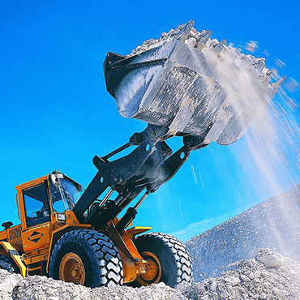

Нерудные строительные материалы: тенденция к увеличению спроса
Рост объемов капитального и дорожного строительства в России способствует динамичному развитию рынка нерудных материалов. Темпы его роста соответствуют росту общего рынка строительства и составляют около 10–15% в год. Анализ продуктовых границ позволяет выделить четыре обособленных рынка НСМ: песка, гравия, гранитного щебня и известнякового щебня. Причем щебень и гравий формируют более половины объема рынка.
анализ рынка нерудных материалов посткризисного периода
18 февраля 2018
Анализ рынка нерудных материалов посткризисного периода
Высокая концентрация
Особенность рынка нерудных строительных материалов в том, что он является высококонцентрированным. Это связано с достаточно ощутимыми транспортными расходами на перевозку НСМ от продавца к покупателю. Достаточно сказать, что при транспортировке автомобильным транспортом убыточным становится перемещение товара на расстояния более 60 км. Наиболее предпочтительным является железнодорожный транспорт. Но и в этом случае транспортные расходы составляют значительную долю от стоимости товара, а в некоторых случаях даже превышают ее. Так, цена на щебень и гравий с учетом транспортных расходов возрастает примерно на 20–30%, а на песок до 90%! Надо ли объяснять, что вследствие этого продукция становится неконкурентоспособной, а значит, ее вывоз в другие субъекты Российской Федерации (за исключением граничащих регионов) экономически невыгоден и для поставщиков, и для покупателей. Поэтому географические границы товарного рынка во многом определяются расположением разрабатываемых месторождений по отношению к той или иной группе покупателей. Особенно это характерно для производства песка, который можно добывать практически в каждом регионе. Весь объем производимой на территории того или иного региона продукции реализуется в данной местности либо в приграничных районах соседних областей. Исключение составляет Ленинградская область, вывоз из которой несколько выше. Это объясняется высоким качеством добываемого здесь щебня и повышенным спросом на него. Считается, что этот материал — один из самых прочных в России, он соответствует всем стандартам и нормам. Поэтому и подходит как для жилищного, так и для дорожного строительства и производства бетонов. К тому же многие активно развивающиеся регионы, например Москва, являются в плане добычи НСМ дефицитными. Туда экспортируется более трети добываемого в Ленобласти и Карелии щебня. Тем не менее лидером потребления песка, щебня и гравия на сегодняшний день является все-таки Петербург.

Призовые места СЗФО
На территории Северо-Западного, Центрального и Южного федеральных округов почти в каждом административном районе имеются разрабатываемые месторождения песчаных и песчано-гравийных материалов, обеспечивающие потребности большинства групп покупателей.
Если говорить о Северо-Западном федеральном округе, то производители нерудных материалов расположены здесь более равномерно, чем по Центральному ФО. Явные лидеры этого сегмента рынка — Ленинградская область, Республика Карелия и Санкт-Петербург, суммарный удельный вес которых составляет 66,76% в общем объеме производства нерудных материалов по СЗФО. Первое место в этой тройке лидеров, бесспорно, принадлежит Ленобласти. Ее удельный вес в общем объеме производства СЗФО составляет 37% . Второе место занимает Карелия (17%). За ней следуют Санкт-Петербург (12%) и Мурманская область (9%).
Для сравнения: удельные веса в производстве нерудных материалов Северо-Западного федерального округа Калининградской, Вологодской и Новгородской областей составляют 5–6%, Архангельской, Псковской областей, Республики Коми — 3–4%. На сегодня общий объем петербургского рынка щебня составляет (по разным оценкам) от 8 до 13 млн. куб. м. До 90% щебня производят в Ленинградской области, остальная часть приходится на карьеры Карелии. Основные участники карельского рынка щебня — петербургские и московские компании.
СЗФО: делим рынок
За последние три года выпуск нерудных материалов в Северо-Западном регионе увеличился почти на 40%. По прогнозам аналитиков, до 2010 г. объем производства щебня в Карелии и Ленобласти увеличится до 25 млн. куб. м в год. Всего в федеральном округе добычей и реализацией нерудных материалов занимаются более 200 хозяйствующих субъектов, более 40 из которых размещены на территории Ленинградской области. Количество этих компаний растет, прежде всего за счет прихода зарубежных инвесторов, готовых к вложениям инвестиций с долгим сроком окупаемости.
Многие строительные фирмы пришли к необходимости добывать НСМ для нужд своего производства в собственных или арендованных карьерах, у собственников которых имеется лицензия на осуществление указанных видов деятельности. Это позволяет компаниям сократить затраты на перевозку и обеспечить бесперебойную поставку материалов на производство или строительную площадку. К таким компаниям в первую очередь относятся дорожно-эксплуатационные предприятия, использующие нерудные материалы для производства асфальтобетона, строительства и ремонта дорог.
Кроме того, повсеместно отмечается несанкционированная добыча и реализация песка. В некоторых областях доля незаконно добытого и реализованного песка достигает 10–15%.
Для выхода на рынок нерудных строительных материалов СЗФО новых компаний существует серьезный барьер. В первую очередь это ограниченность ресурсов. Как бы много ни было запасов НСМ на этой территории, практически все они уже распределены между действующими хозяйственными субъектами. Освоение же новых месторождений предполагает проведение дорогостоящих геологоразведочных работ, а это требует вложения крупных инвестиций в проект, который может оказаться убыточным. Повышенные риски вложений зачастую отпугивают потенциальных инвесторов. Именно поэтому выход на рынок НСМ для конкурирующих компаний весьма осложнен.
Дефицит и цена
Дефицит песка и щебня в летний период и ежегодный рост цен являются основными тенденциями рынка нерудных материалов. Дефицит вызван увеличением спроса на НСМ из-за большого объема сезонных работ в области строительства. А рост цен складывается из нескольких факторов. Во-первых, производство нерудных материалов является достаточно металло- иэнергоемким. С учетом того, что тарифы на электроэнергию постоянно растут, а также ощутимо дорожают металл и дизельное топливо, себестоимость добычи НСМ также возрастает. Расходы на транспортировку тоже повышаются из-за увеличения железнодорожных тарифов. Таким образом, ежегодное увеличение расценок, например на щебень, составляет в среднем около 5%. Низкая конкуренция на рынке щебня не дает возможности сдерживания цен. Она объясняется тем, что для добычи этого материала необходимо вложение крупных инвестиций со сроком окупаемости свыше 5 лет. Такие условия устраивают далеко не всех инвесторов, ведь сегодня есть возможность гораздо быстрее получить прибыль.
Между тем, от стоимости щебня зависит стоимость такого незаменимого продукта, как бетон. Скажем, если брать тяжелые бетоны на гранитном щебне фракции 5-20, то стоимость щебня может составлять 30–50% от стоимости производства 1 куб. м бетона.
На рынке строительного песка наблюдается достаточно интересная ситуация. Емкость данного сегмента составила в 2007 г. около 18 млн. куб. м. При этом порядка 50% рынка контролируется признанным монополистом — группой ЛСР. После приобретения предприятий по намыву песка ЛСР несколько лет держала цены на одном и том же уровне, и только в 2006-м, по мере реструктуризации и модернизации производственных мощностей, произошел ценовой скачок. По данным Росстата, он составил 30,8%. Обещания представителей группы ЛСР не поднимать цены на песок в ближайшее время вызваны, скорее всего, не работой Антимонопольной службы, а растущей в этом сегменте рынка конкуренцией. Ведь основная трудность ведения бизнеса по добыче песка — получение соответствующей лицензии. Сам процесс добычи в отличие от щебеночного производства крайне прост. Именно поэтому перебить слишком высокие цены способна практически любая компания, сумевшая выйти на этот рынок. Но необходимо помнить, что объемы разрабатываемых месторождений качественного намывного песка небезграничны. В обозримом будущем они неизбежно начнут истощаться, поэтому уже сегодня ведущие игроки рынка ищут альтернативу.